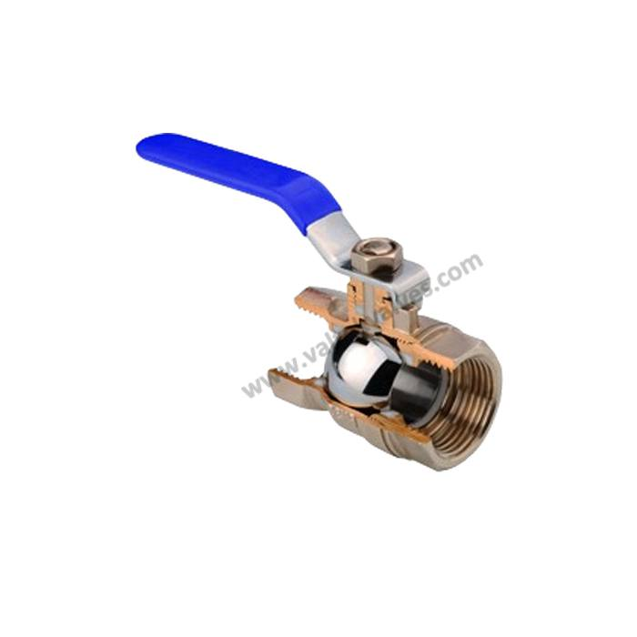
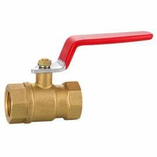
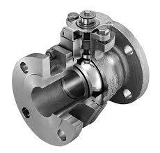
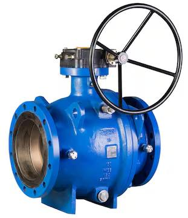
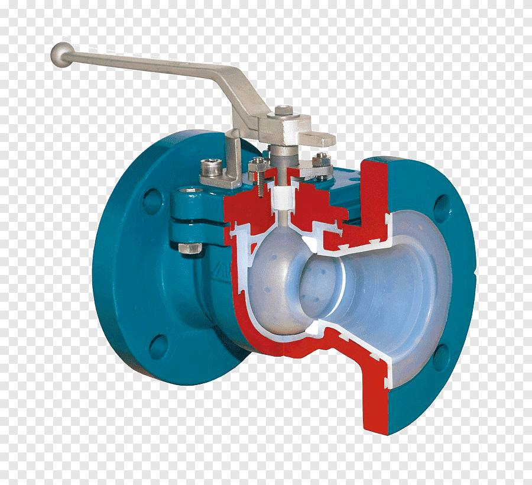

Industrial Ball Valves — Manufacturer, Supplier & Stockist
Ball valves are quarter-turn valves that use a spherical closure element (the ball) to start, stop and regulate the flow of liquids and gases. Navjivan Valves supplies a wide range of industrial ball valves — including forged, floating, trunnion-mounted and lined variants — sourced from leading Indian manufacturers, to process plants, EPC contractors and industrial buyers across India.

Product Overview
Ball valves are prized for their simple quarter-turn operation, tight shut-off and low maintenance requirements. The valve consists of a rotating ball with a bored passage; when the bore is aligned with the pipeline the valve is fully open, and a 90° turn closes it completely. This makes ball valves a popular choice wherever fast, reliable on/off isolation is needed — from pipeline isolation and utility services to process shut-off in oil & gas, chemical and water treatment plants.
Types of Ball Valves

Forged Ball Valves
Constructed from forged carbon steel, stainless steel or alloy steel for superior mechanical strength. Suited to high-pressure and high-temperature service where cast components would be less reliable.

Floating Ball Valves
The ball is not fixed to the body; line pressure pushes it against the downstream seat to create the seal. A simple, cost-effective, widely used design for low and medium pressure applications.

Trunnion-Mounted Ball Valves
The ball is supported by trunnions (fixed shafts) top and bottom, so it does not rest on the seats. Preferred for large sizes and higher pressure classes where floating designs become impractical.

Lined Ball Valves
The body and ball are lined with PTFE or similar materials to resist highly corrosive or abrasive media, commonly used in chemical processing.
Specifications
| Testing Standard | BS 5146 |
|---|---|
| Size Range | 2" – 16" (DN50 – DN400) |
| Pressure Class | 150 – 2500 |
| Body Material | WCB, WCC, WC6, WC9, C5, C12, LCB, LCC, CF8, CF8M |
| Seat | A105 + 13% Cr, A105 + Stellited |
| Trim | API Trim No. 1 to 16 |
| Face to Face | As per ASME B16.10 |
| End Connection | ANSI B16.5 (Raised Face Flanged), ANSI B16.25 (Butt Weld), ANSI B16.11 (Socket Weld), ANSI B1.20.1 (Screwed End) |
| Operation | Manual, Gear Operated |
Specifications reflect the products currently supplied by Navjivan Valves. Exact availability may vary by size and material — please confirm with our team for your specific requirement.
Applications
- Oil & Gas Pipelines
- Chemical Processing Plants
- Power Generation
- Water & Wastewater Systems
- Petrochemical Plants
- General Industrial Isolation
Materials of Construction
Ball valves are available in a range of body materials to match the process fluid and service conditions, including WCB, WCC, WC6, WC9, C5, C12, LCB, LCC, CF8 and CF8M, with seat materials such as A105+13% Cr and A105+Stellited trims.
Key Features
- Quick quarter-turn on/off operation with fast, reliable shut-off
- Tight sealing performance even in high-pressure or high-temperature service
- Low pressure drop and minimal flow resistance across the bore
- Suitable for gases, liquids and slurries across a wide range of industries
- Durable, corrosion- and erosion-resistant construction for long service life